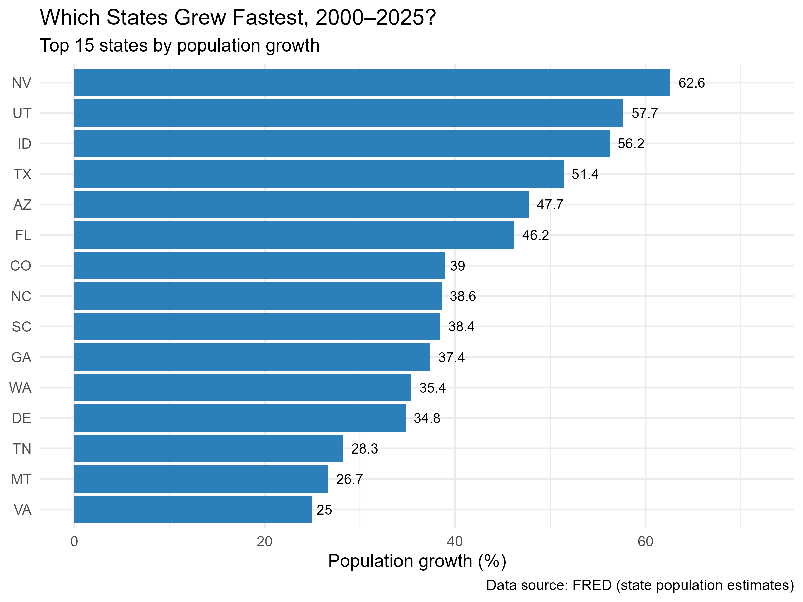
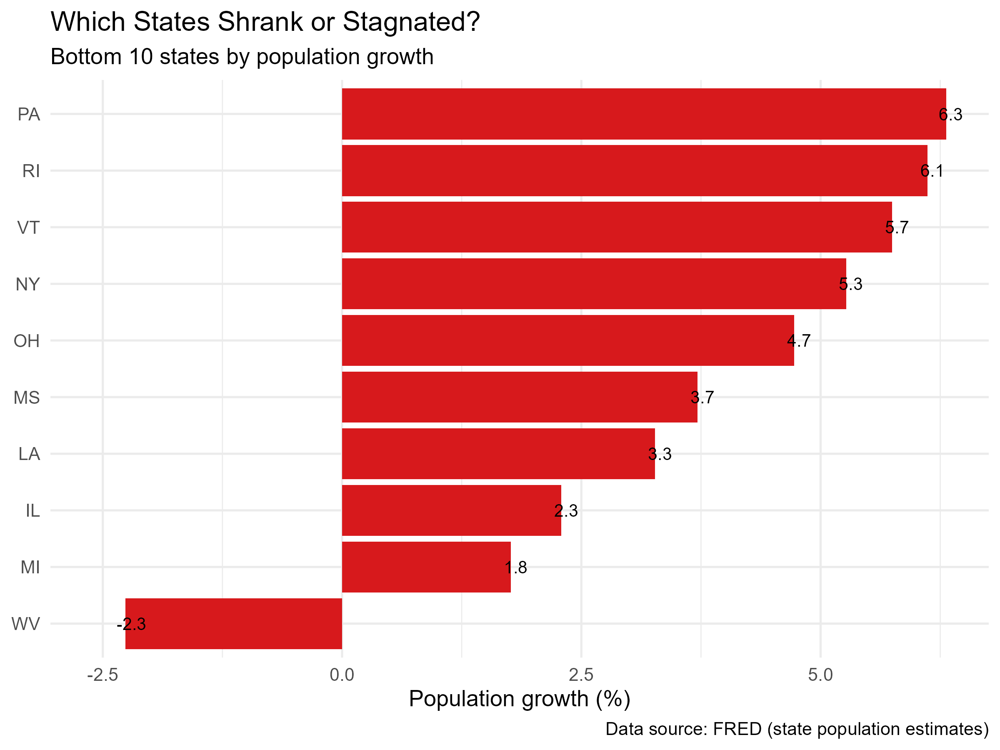
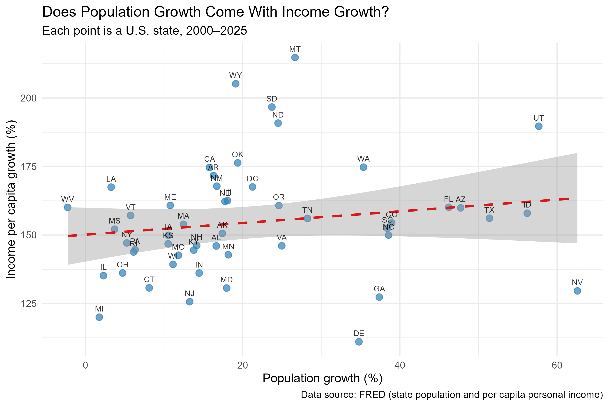
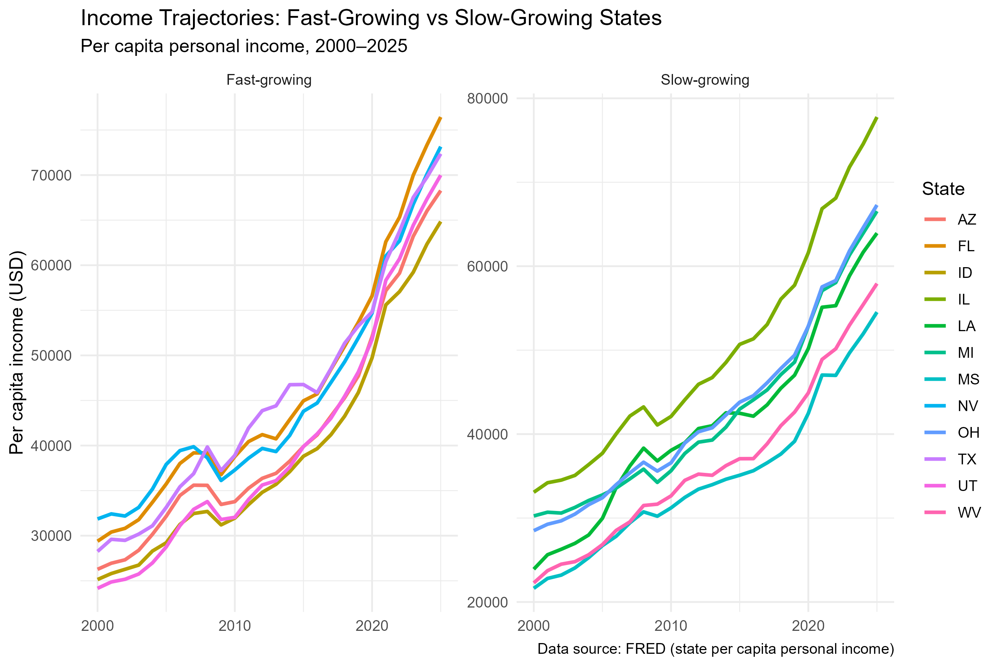

Blog4: Does Population Growth Bring Prosperity?
Introduction
Every year, hundreds of thousands of Americans move between states. They leave the Northeast and Midwest for the Sun Belt, chasing lower taxes, cheaper housing, and new job opportunities. Meanwhile, there are also immigrants from foreign countries entering different states. Their choice also includes consideration to their new life condition. Between 2000 and 2025, Nevada’s population grew by 63%, Utah’s by 58%, and Texas’s by 51%. Meanwhile, West Virginia lost population, and Illinois barely grew at all.
This migration is not just a demographic fact. It is often treated as a signal of economic success. States that attract new residents are said to be “winning” — they have jobs, opportunities, and a future. States that lose residents are said to be “declining.”
But is that true? Does population growth actually mean that the people living in a state are becoming richer? Or are migrants moving to places that are cheaper — not necessarily more prosperous?
This analysis uses data from the Federal Reserve Economic Data (FRED) system to examine population and income trends across all 50 U.S. states (plus D.C.) from 2000 to 2025. The data is retrieved programmatically through the fredr R package, so the entire analysis is reproducible.
The answer, it turns out, is more nuanced than the headline numbers suggest. Population growth and income growth are two different things — and confusing them can lead to the wrong conclusions about which states are doing well.
How to measure
I used two annual series for each state:
- Population (
{state}POP) — resident population in thousands - Per capita personal income (
{state}PCPI) — total personal income divided by population, in current dollars
Using per capita income is essential when comparing states of different sizes.
All figures are in current (nominal) dollars. Real growth after inflation would be lower; this is discussed in the Limitations.
I collected data for all 51 jurisdictions (50 states plus the District of Columbia) from 2000 through 2025 — about 2,652 observations in total.
Finding 1: Growth Is Concentrated in the West and South

The fastest-growing states are all in the West and South: Nevada (+63%), Utah (+58%), Idaho (+56%), Texas (+51%), Arizona (+48%), and Florida (+46%).

The slowest-growing states are all in the Midwest and Northeast: West Virginia (-2.3%), Michigan (+1.8%), Illinois (+2.3%), Louisiana (+3.3%), and Mississippi (+3.7%).
West Virginia is the only state that lost population over the period. This is consistent with long-running trend of out-migration of young workers, declining coal employment, and an aging population in that area.
Finding 2: Population Growth Does Not Mean Income Growth

If population growth were a sign of economic success, we would expect the fastest-growing states to also show the fastest income growth. However, the data shows no such relationship. According to the scatter plot, it shows only a weak, noisy-positive relationship.
For example: Nevada has a population growth of 63%, which is the highest in the country, but has a nominal income growth of only 135%. Meanwhile, Utah has a similar population growth of 58%, but Utah’s nominal per capita income grew roughly 190% versus Nevada’s 135%. In this case, the relationship between income and population growth is relatively week.
Finding 3: Income Growth Differ More Among Slow-Growing States

Then, we collected the income growth data for the six fastest-growing states and the six slowest-growing states in terms of population growth.
Among population-fast-growing states, per capita income range is relatively narrow: all six states end the period between $65,000 and $77,000.
Among population-slow-growing states, the range is much wider: Illinois reaches nearly $80,000 by 2025, while Mississippi remains near $55,000.
In this case, Population growth is not a signal of prosperity, but population stagnation is not a signal of decline either. Illinois has one of the highest per capita incomes in the country while its population has remained roughly flat.The reason is that both population inflow and outflow exist in each state. If a state is attracting high-skilled immigrants while those leaving the state were the middle and low-income locals, the income per capita for the state would increase while population would remain stable.
Conclusion
This analysis leads to three takeaways:
Population growth is not a reliable indicator of income growth. Nevada and Utah both grew quickly, but their income growth was very different. Meanwhile, Illinois’s population remained flat while its per capita income grew steadily.
Income growth is not driven by the net change in population. The two variables are only weakly correlated. The people who leave a state and the people who arrive are different in income, skills, and consumption behavior. As a result, income is affected by who is in the population, not just how many people there are.
The composition of migration matters more than the headline number. A state can grow quickly and remain poor, or stagnate and remain rich. The interesting question is not “how many people moved in?” but “who moved in, and who moved out?”
What should a reader take away from this? If you are deciding where to live, do not assume that population fast-growing states are richer or that population slow-growing states are declining. The two are only loosely connected. Population change is a useful signal, but it is not the same as economic prosperity.
Limitations
This analysis has several limitations:
- Per capita income is a crude measure. It divides total income by total population, including children and retirees who do not earn income.
- No inflation and cost-of-living adjustment. The analysis use nominal income data so the growth rates reported here include both real income growth and price inflation. Meanwhile, a dollar in Mississippi buys more than a dollar in California, but this analysis treats them as equal.
- Population estimates, not census counts. FRED uses annual estimates between decennial censuses, which can diverge from actual counts.
- Simple correlation. The analysis describes patterns, not causes. It does not explain why some states grow and others do not.
- Population growth combines natural increase and net migration. This analysis cannot separate the two, so statements about migration specifically are not supported.
Data source: FRED, Federal Reserve Bank of St. Louis. State population ({state}POP) and per capita personal income ({state}PCPI), 2000–2025. All data retrieved programmatically through the fredr R package. Full code is available in the project repository.